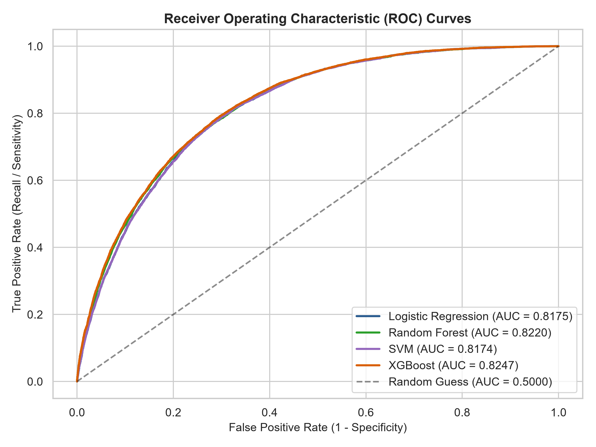
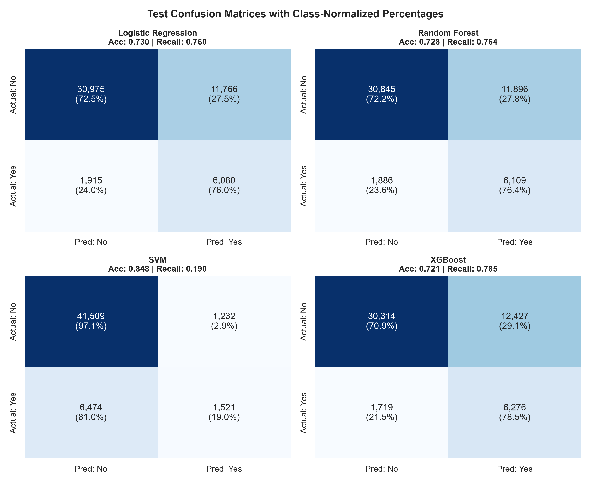
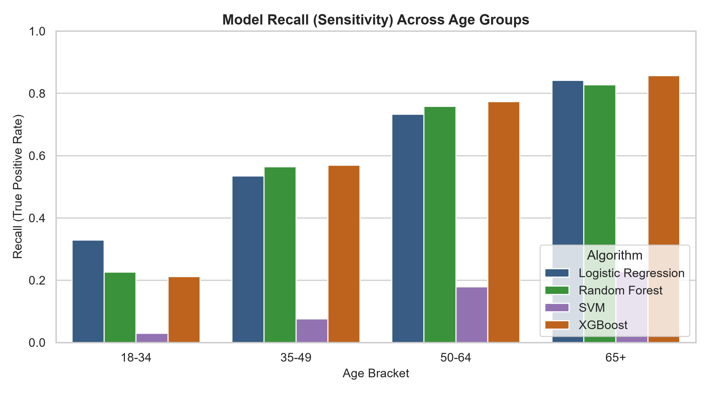
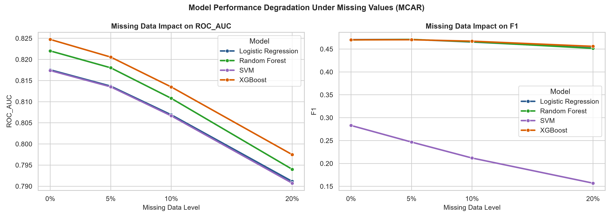
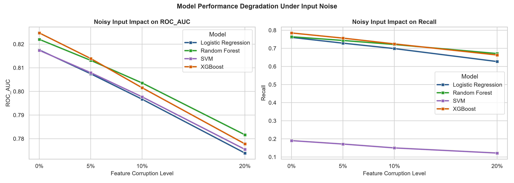

Type 2 diabetes mellitus is a growing global health crisis. Early detection enables lifestyle and pharmacotherapy interventions that can prevent microvascular and macrovascular complications. However, standard ML models often optimize for raw Accuracy, inadvertently driving models toward majority-negative prediction. This research investigates predictive performance, demographic fairness, and data-quality robustness across four representative machine learning algorithms.
| Model | Accuracy | Precision | Recall | Specificity | F1 | ROC_AUC | False Negative Rate |
|---|---|---|---|---|---|---|---|
| Logistic Regression | 0.730349 | 0.340693 | 0.760475 | 0.724714 | 0.470570 | 0.817550 | 0.239525 |
| Random Forest | 0.728359 | 0.339295 | 0.764103 | 0.721672 | 0.469923 | 0.822019 | 0.235897 |
| SVM | 0.848116 | 0.552488 | 0.190244 | 0.971175 | 0.283029 | 0.817377 | 0.809756 |
| XGBoost | 0.721184 | 0.335561 | 0.784991 | 0.709249 | 0.470148 | 0.824735 | 0.215009 |


| Model | Attribute | Demographic_Parity_Difference | Equal_Opportunity_Difference | Equalized_Odds_Difference | False_Negative_Rate_Difference |
|---|---|---|---|---|---|
| Logistic Regression | Sex (Male vs Female) | 0.064926 | 0.001856 | 0.064478 | 0.001856 |
| Logistic Regression | Age Groups (18-34, 35-49, 50-64, 65+) | 0.526260 | 0.513024 | 0.513024 | 0.513024 |
| Random Forest | Sex (Male vs Female) | 0.038291 | 0.025146 | 0.037870 | 0.025146 |
| Random Forest | Age Groups (18-34, 35-49, 50-64, 65+) | 0.520909 | 0.600803 | 0.600803 | 0.600803 |
| SVM | Sex (Male vs Female) | 0.007163 | 0.011681 | 0.011681 | 0.011681 |
| SVM | Age Groups (18-34, 35-49, 50-64, 65+) | 0.091178 | 0.198132 | 0.198132 | 0.198132 |
| XGBoost | Sex (Male vs Female) | 0.064064 | 0.003017 | 0.064143 | 0.003017 |
| XGBoost | Age Groups (18-34, 35-49, 50-64, 65+) | 0.557319 | 0.644967 | 0.644967 | 0.644967 |
| Model | Age_Group | Sample_Size | Actual_Prevalence | Recall | False_Negative_Rate | ROC_AUC |
|---|---|---|---|---|---|---|
| Logistic Regression | 18-34 | 4844 | 0.028282 | 0.328467 | 0.671533 | 0.817176 |
| Logistic Regression | 35-49 | 10150 | 0.079803 | 0.534568 | 0.465432 | 0.835394 |
| Logistic Regression | 50-64 | 18150 | 0.166556 | 0.732716 | 0.267284 | 0.809173 |
| Logistic Regression | 65+ | 17592 | 0.228797 | 0.841491 | 0.158509 | 0.754993 |
| Random Forest | 18-34 | 4844 | 0.028282 | 0.226277 | 0.773723 | 0.827271 |
| Random Forest | 35-49 | 10150 | 0.079803 | 0.564198 | 0.435802 | 0.839619 |
| Random Forest | 50-64 | 18150 | 0.166556 | 0.758187 | 0.241813 | 0.811527 |
| Random Forest | 65+ | 17592 | 0.228797 | 0.827081 | 0.172919 | 0.762816 |
| SVM | 18-34 | 4844 | 0.028282 | 0.029197 | 0.970803 | 0.819244 |
| SVM | 35-49 | 10150 | 0.079803 | 0.075309 | 0.924691 | 0.835786 |
| SVM | 50-64 | 18150 | 0.166556 | 0.178961 | 0.821039 | 0.809172 |
| SVM | 65+ | 17592 | 0.228797 | 0.227329 | 0.772671 | 0.754044 |
| XGBoost | 18-34 | 4844 | 0.028282 | 0.211679 | 0.788321 | 0.831963 |
| XGBoost | 35-49 | 10150 | 0.079803 | 0.569136 | 0.430864 | 0.841144 |
| XGBoost | 50-64 | 18150 | 0.166556 | 0.773404 | 0.226596 | 0.814363 |
| XGBoost | 65+ | 17592 | 0.228797 | 0.856646 | 0.143354 | 0.767103 |



| Model | Accuracy | Recall | ROC_AUC | Sex_Equal_Opportunity_Diff | Age_Equal_Opportunity_Diff | Noisy_Data_20pct_AUC_Drop |
|---|---|---|---|---|---|---|
| Logistic Regression | 0.730349 | 0.760475 | 0.817550 | 0.001856 | 0.513024 | 0.043612 |
| Random Forest | 0.728359 | 0.764103 | 0.822019 | 0.025146 | 0.600803 | 0.040363 |
| SVM | 0.848116 | 0.190244 | 0.817377 | 0.011681 | 0.198132 | 0.041877 |
| XGBoost | 0.721184 | 0.784991 | 0.824735 | 0.003017 | 0.644967 | 0.046914 |
| Model_1 | Model_2 | Mean_1 | Mean_2 | Mean_Difference | Paired_t_Statistic | t_test_p_value |
|---|---|---|---|---|---|---|
| XGBoost | Logistic Regression | 0.825182 | 0.817761 | 0.007421 | 30.659366 | 2.045839e-10 |
| XGBoost | Random Forest | 0.825182 | 0.822299 | 0.002883 | 18.312668 | 1.972628e-08 |
| Random Forest | Logistic Regression | 0.822299 | 0.817761 | 0.004538 | 14.940062 | 1.168016e-07 |
| SVM | Logistic Regression | 0.817433 | 0.817761 | -0.000328 | -7.447680 | 3.901681e-05 |
| SVM | Random Forest | 0.817433 | 0.822299 | -0.004866 | -17.726996 | 2.624074e-08 |
| SVM | XGBoost | 0.817433 | 0.825182 | -0.007749 | -34.363094 | 7.388390e-11 |
| Model_1 | Model_2 | M1_Correct_M2_Incorrect (b) | M1_Incorrect_M2_Correct (c) | Chi2_Statistic | p_value | Significant_Discordance (p < 0.05) |
|---|---|---|---|---|---|---|
| XGBoost | Logistic Regression | 1381 | 1846 | 66.717075 | 3.134086e-16 | True |
| XGBoost | Random Forest | 965 | 1329 | 57.440715 | 3.483217e-14 | True |
| Random Forest | Logistic Regression | 1587 | 1688 | 3.053435 | 8.056657e-02 | False |
| SVM | Logistic Regression | 10534 | 4559 | 2364.584642 | 0.000000e+00 | True |
| SVM | Random Forest | 10711 | 4635 | 2404.901929 | 0.000000e+00 | True |
| SVM | XGBoost | 11263 | 4823 | 2577.441315 | 0.000000e+00 | True |
Generated by Academic ML Research Pipeline • CDC BRFSS 2015 Cohort Study • Python 3.13